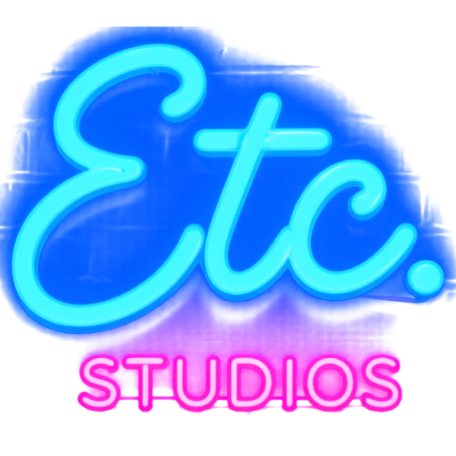

I can't code. I'm building an MMO anyway. Etc. Studios makes videos about building Elderwyn Online and the tools behind it, made with AI doing the typing: dev logs, wins, disasters, etc.
YouTube · TikTok @etcstudios · Instagram @etcstudios421
The Content Studio is our own desktop app. It edits our recordings and publishes them to the Etc. Studios accounts on YouTube, TikTok and Instagram, and reads those accounts' statistics so we can see what our audience likes. It is used only by Etc. Studios, for Etc. Studios' own accounts. It is not offered to the public.